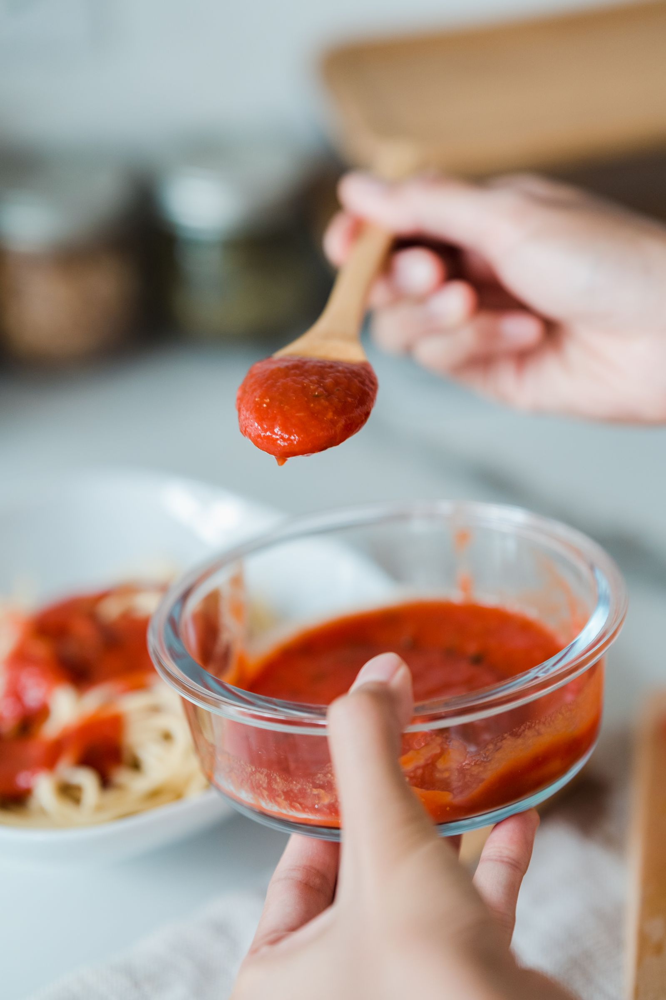

01.1 / Personalization
A voice that travels.
Researching whether learned preferences carry into unseen topics without flattening individual expression.
Read the research agenda ↗A frontier research lab
Intelligence can generate.
Taste knows what belongs.
We’re building a taste LLM that learns what good means to you. Writing is our first domain. Personal judgment is the frontier.

01 / Research
What you keep, change, and reject reveals a kind of judgment that a generic “write better” prompt cannot fully express. We’re researching how to make that judgment learnable, contextual, and useful across AI products.
01.1 / Personalization
Researching whether learned preferences carry into unseen topics without flattening individual expression.
Read the research agenda ↗01.2 / Context
A founder update and a personal essay need different choices. Preferences should adapt to audience, purpose, and surface.
Explore the prototype ↗01.3 / Evaluation
Our evaluation plan measures held-out human preference and editing effort. The current deterministic benchmark does not validate model quality.
See evidence & limitations ↗
Our name / Our point of view
coulis / koo-LEE / noun
A smooth sauce made from fruit or vegetables. Concentrated flavor. A finishing touch that changes the whole.
That is the idea behind Coulis: AI that can learn the choices that make something feel right to a particular person, in a particular moment.
AI, with taste.
02 / The starting point
Try the browser checker below. It runs local, configured rules; it is not the taste LLM. The open-source prototype also supports provider-based critique and scoped, approved preference memory.
A clean check means no configured rule violations were found. It does not mean the facts were verified.
Install the local prototype ↗03 / Build with us
We work with AI product companies to explore personal taste inside the tools people already use. Businesses buy the integration; their users benefit from more personal AI.
The long-term model and taste layer.
A paid partnership to evaluate a concrete workflow.
The goal: AI that reflects their choices.
Start with scoped local integration and evaluation. Hosted model, API, and enterprise features are on the waitlist.
Our strategy pairs paid commercial work from the start with venture funding for the research program. This is our business model, not a claim of existing revenue.
04 / Clear boundaries
An open-source local prototype with configured checks, explicit preference approval and context selection. Provider-based critique uses your selected model. No trained Coulis taste LLM is released.
Capabilities & ownership ↗Approved preference memory can update independently of model weights. Training a shared model requires separate permission. Customer writing is not automatically pooled into a training corpus.
Data permissions ↗The public synthetic fixture tests deterministic behavior. We have not yet run independent user studies, measured editing-time savings, or validated the eight-axis model critique.
Benchmark status ↗Coulis / Taste infrastructure for AI